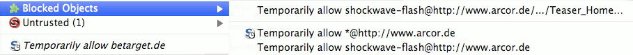

First steps TOC
First steps TOC  Browser
setup Alternative
browser configuration
Browser
setup Alternative
browser configuration First steps TOC Browser
setup Alternative
browser configuration
JonDoFox is a Firefox browser profile/configuration particularly optimized for anonymous and secure web surfing. You may either integrate JonDoFox in your Firefox or run it separately. The following lines describe how to install and use JonDoFox.
This installation option integrates the JonDoFox profile and a locally installed Firefox, so that JonDoFox operates seamlessly with your system. Any previous Firefox configuration you may have created remains untouched by the installation. After installing, you may choose between both your profile and the JonDoFox configuration at each start of Firefox.
First, install Firefox on your system if you haven't done so yet. After that, you may install JonDoFox as follows:
Download the JonDoFox installation program. Start the downloaded program by a (double) click and follow the instructions.
Notice
The installer may also be used for deinstalling the previously installed
profile, but beware:
Please do not change the entries that the installer creates. Otherwise, a
clean installation can not be guaranteed! Also, only use the
installer for deinstallation if you have also used it for installing
JonDoFox.
user@computer#:/> unzip profile.zip -d target.user@computer#:/> cd target.install_linux.sh
from there: user@computer#:/target>
./install_linux.shNotice
When a new version of JonDoFox is released, you may always install the new
version "on top of" the old one, i.e. into the same directory. Your bookmarks
will be kept.
The portable installation is recommended for removable drives. It will not integrate with your system. If needed, you have to create any links to the JonDoFox program files yourself.
The JonDoFox installation program is also prepared for a portable installation. If you choose the portable installation, you may install JonDoFox on both a removable drive and your hard drive. Any existing Firefox or JonDoFox installation remains untouched as long as you do not install JonDoFox to the same directory and thus update an existing installation. While updating from earlier JonDoFox versions your bookmarks are kept. JonDoFox Portable automatically integrates with the PortableApps menu for which a lot of other applications are available as well.
(in preparation)
The JonDoFox lite package contains all extensions which are relevant for your security, already with settings optimized. You will find some other useful extensions in the complete package which we have individually tested concerning their security and compatibility with JonDoFox. The Firefox status bar always gives you control of the most important functions integrated in JonDoFox:

Using CS-Lite, you may very conveniently determine for which websites to accept cookies and for which to block them. If you click on the CS-Lite icon with your left mouse button, you are given the following options for the currently visited web site:

Warning: You should never use the option  Allow Cookies Globally
if possible. This allows cookies from all websites that have not been
explicitly blocked, and others
may track your steps on the Web.
Allow Cookies Globally
if possible. This allows cookies from all websites that have not been
explicitly blocked, and others
may track your steps on the Web.
AdblockPlus  is
an advertizement filter that runs in the background. Usually, you do not have
to alter its settings. However, you may add your own filter lists any time.
is
an advertizement filter that runs in the background. Usually, you do not have
to alter its settings. However, you may add your own filter lists any time.
NoScript  lets you
conveniently control which potential dangerous scripts and plugins from a
website your browser may execute or not.
lets you
conveniently control which potential dangerous scripts and plugins from a
website your browser may execute or not.
When you visit a website containing plugin content like Flash movies or Java applets, this content will be automatically blocked by NoScript. A placeholder (left image) is shown instead of the active content:

|
 |
You may allow the content by clicking on the placeholder or by choosing the
respective option in  Blocked Objects after clicking
on the NoScript menu icon .
Blocked Objects after clicking
on the NoScript menu icon .
Warning: Without special protective measures, allowed plugin content may completely or partially revoke your anonymity and might even damage your system.
If you click on the NoScript icon you get a list of
all addresses/service providers with JavaScript code on the currently visited
web site. The respective entries are marked with the icon:
 |
By clicking on Temporarily allow you
activate scripts for this entry. By another click, as shown in the right image,
you may easily remove this permission again. If you would like to remove the
permissions for all addresses, you just have to click on  Revoke temporary
permissions.
Revoke temporary
permissions.
Warning: You should give as few permissions as possible, and if possible only for the currently visited website. Third party scripts are often only used to spy on you and are rarely needed for proper functionality of the website.
If you generally distrust any address you may classify it
untrusted, and it will no more show up within the addresses you might
allow. In order to make this classification, move your mouse over the option
 Untrusted. Then, you
get an overview of all the addresses on the current website which you may mark
untrusted:
Untrusted. Then, you
get an overview of all the addresses on the current website which you may mark
untrusted:
You may undo this action just the same way.
If you would like to surf the Web with a different (local) proxy than JonDo
or without any proxy, just use the button  integrated in JonDoFox (down right) in
order to switch between different proxy configurations:
integrated in JonDoFox (down right) in
order to switch between different proxy configurations:

 Edit Custom
Proxy in order to create an individual proxy configuration.
However, this is only recommended for experts.
Edit Custom
Proxy in order to create an individual proxy configuration.
However, this is only recommended for experts.Whenever you like to bypass the proxy without completely deactivating it (e.g. when downloading large files to save time and money), just open the context menu with a right mouse click on the file and choose Bypass JonDo/Tor/Proxy and Save Link As...
To prevent having to activate dangerous Flash in your browser, you should always download web videos to your hard drive and play them from there. This also saves you the additional traffic which would be needed to view a streaming video again. Besides some links to video download sites, JonDoFox contains the download tool Download Helper for this purpose. If you are visiting a YouTube page, just click on the black triangle left to the address bar (marked in red) and select the video you would like to download:

For Windows and Linux (under WINE), there also exists an excellent freeware program called aTube Catcher. You may configure this program for JonDo by activating the HTTP proxy in aTube Catcher in Tools->Connection settings and setting it to Host:127.0.0.1 and Port: 4001

For playing movies of all video formats on all operating systems, the free VideoLAN Media Player is a very good choice.
First steps TOC Browser
setup Alternative
browser configuration